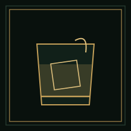
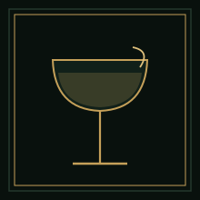

Highball pohár
Magas, karcsú üvegpohár (240–350 ml), amely minimalizálja a felszínt, így sokáig megőrzi a szénsavas keverők frissességét és a jég hidegét.
Ajánlott tételek: Mojito, Gin Tonic, Cuba Libre, Tom Collins
Klasszikus és modern koktélok itallapja
A megfelelő kehely és szerszám kiválasztása tartja egyensúlyban az ital hőmérsékletét, szénsavasságát és illatjegyeit.
Magas, karcsú üvegpohár (240–350 ml), amely minimalizálja a felszínt, így sokáig megőrzi a szénsavas keverők frissességét és a jég hidegét.
Ajánlott tételek: Mojito, Gin Tonic, Cuba Libre, Tom Collins

Alacsony, vastag aljú tumblis pohár (180–300 ml). Széles szája szabadon engedi a párlatok és a citrusolajok aromáit nagy jégtömb mellett.
Ajánlott tételek: Old Fashioned, Negroni, Whiskey Sour, White Russian

Kúpos falú, hosszú szárú koktélospohár (150–210 ml). A szár megakadályozza, hogy a kéz melege felmelegítse a jég nélkül szervírozott, tisztára szűrt italt.
Ajánlott tételek: Dry Martini, Cosmopolitan, Manhattan

Az 1920-as évek Speakeasy bárjainak ikonikus, lágyan ívelt kelyhe (160–200 ml). Ideális választás rázott, selymes textúrájú vagy tojásfehérjés italokhoz.
Ajánlott tételek: Daiquiri, Margarita, Sidecar, Gimlet